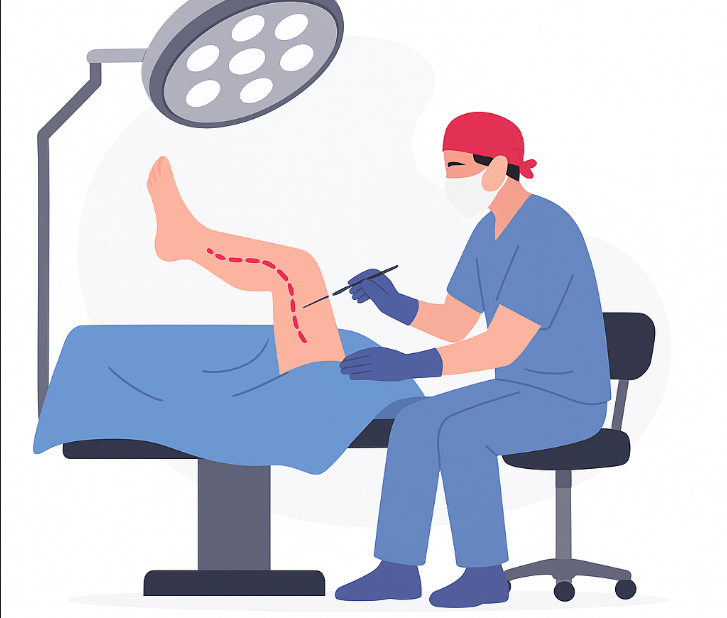

Secrétariat
Charcot / Saint-Charles :
04 72 32 69 21
Lyon Nord : 04 72 01 45 16
Retrouvez les praticiens, les lieux de consultation et les principaux domaines de prise en charge de Lyon Chirurgie Vasculaire.
Charcot / Saint-Charles :
04 72 32 69 21
Lyon Nord : 04 72 01 45 16
Sainte-Foy-lès-Lyon, Rillieux-la-Pape et Lyon 1er pour faciliter votre prise en charge.
Chirurgie veineuse, artérielle et chirurgie des abords de dialyse.
Une équipe de chirurgiens vasculaires dédiée à l’accompagnement, au suivi et à la prise en charge des patients.
 Chirurgie vasculaire
Chirurgie vasculaire
 Chirurgie vasculaire
Chirurgie vasculaire
 Chirurgie vasculaire
Chirurgie vasculaire
Sélectionnez un établissement pour visualiser son emplacement et les moyens d’accès.
Informations pratiques pour préparer votre venue.
Informations pratiques pour préparer votre venue.
Informations pratiques pour préparer votre venue.
Une présentation claire des principales spécialités prises en charge par l’équipe.

Traitement des affections des veines, principalement les varices et les troubles de l’insuffisance veineuse.
Prise en charge des anévrismes, sténoses artérielles et troubles de la circulation.
Création et entretien d’un accès vasculaire fiable pour les patients nécessitant une dialyse.
Sélectionnez le praticien ou contactez directement le secrétariat de l’établissement concerné pour organiser votre consultation.